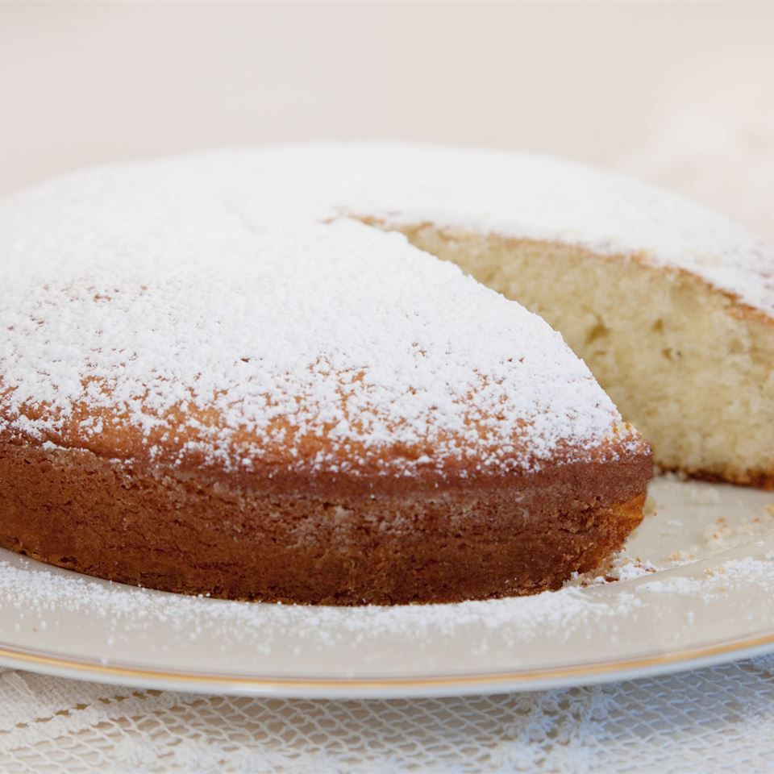

Irish Tea Cake

Description
This Irish tea cake is a simple butter cake that's great with tea or coffee. It's easy to make, pretty, and very delicious.
Ingredients
- 1 cup white sugar
- 1/2 cup butter, softened
- 2 large eggs
- 1 1/2 teaspoons vanilla extract
- 1 3/4 cups all-purpose flour
- 2 teaspoons baking powder
- 1/2 teaspoon salt
- 1/2 cup milk, or more if needed
- 1/4 cup confectioners' sugar for dusting
Steps
- Preheat the oven to 350 degrees F (175 degrees C). Grease and flour a 9-inch round pan.
- Cream sugar and butter together in a mixing bowl with an electric mixer until light and fluffy. Beat in eggs, one at a time, mixing until fully incorporated after each addition. Stir in vanilla.
- Combine flour, baking powder, and salt in a mixing bowl. Stir dry ingredients into wet ingredients alternately with milk, adding 1 to 2 tablespoons more milk if batter is too stiff. Spread batter evenly into the prepared pan.
- Bake in the preheated oven until a toothpick inserted into the center comes out clean, 30 to 35 minutes. Cool in the pan on a wire rack for 10 minutes, then turn out onto a serving plate and cool to room temperature, 20 to 30 minutes. Dust with confectioners' sugar right before serving.